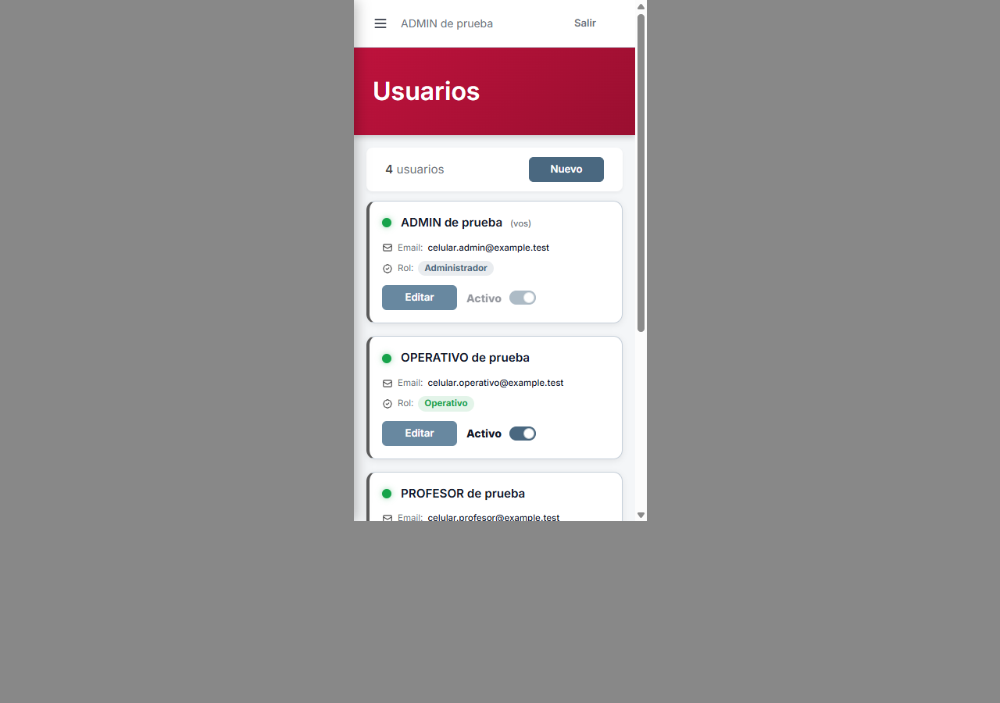
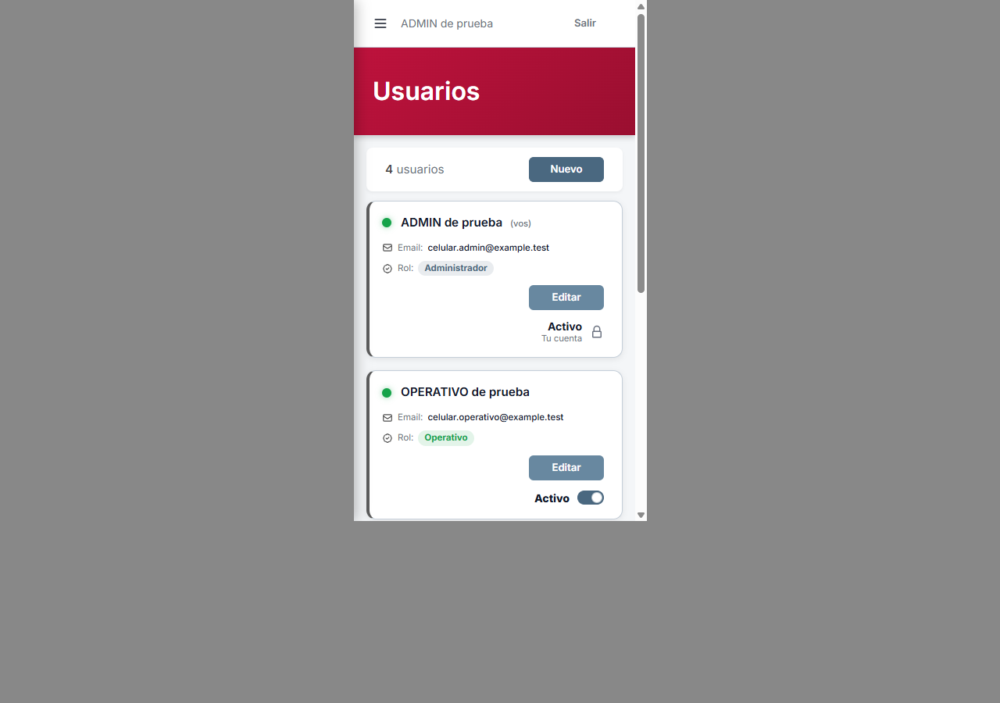
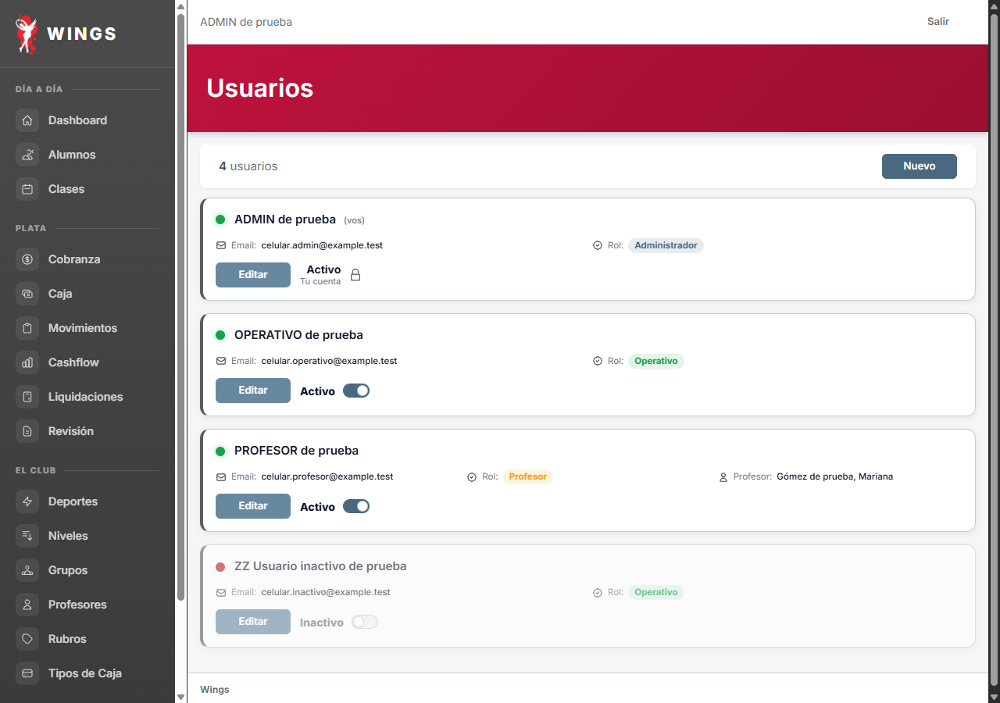
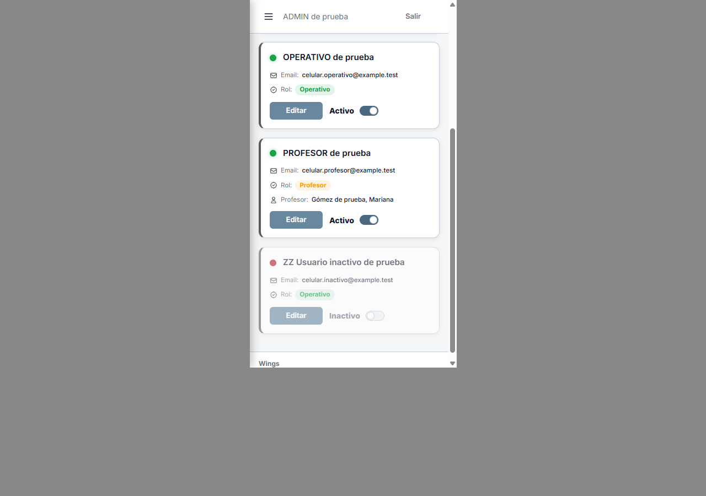
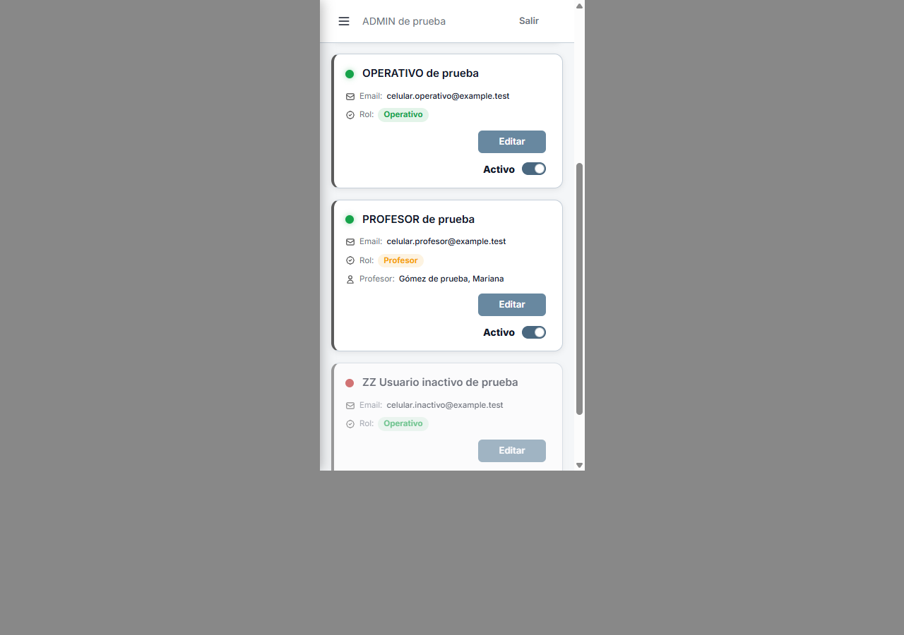
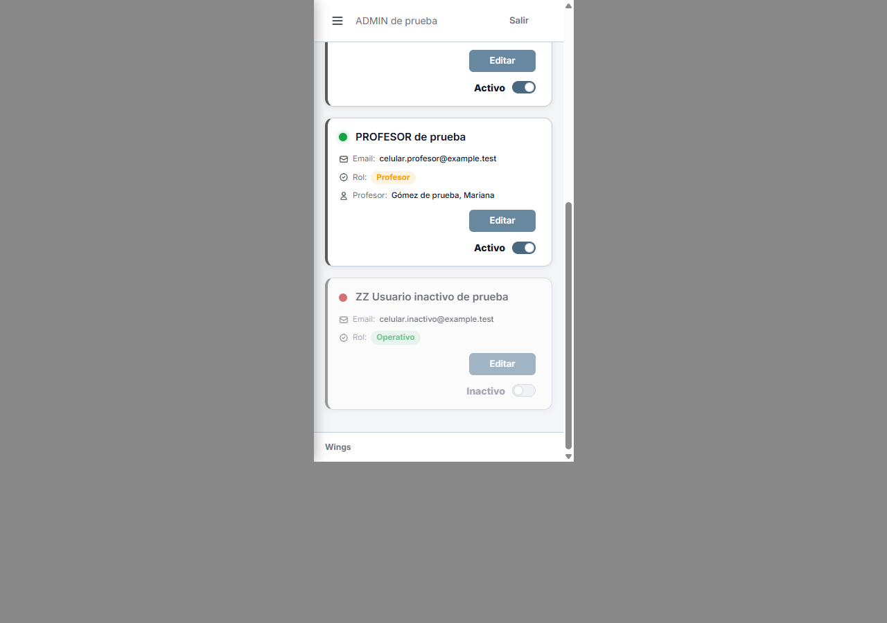

A32 · Tu cuenta
Propuesta aprobada: Activo · Tu cuenta con candado. Los demás usuarios mantienen su interruptor. En celular, Editar queda alineado con Nuevo; escritorio conserva la disposición.
Celular


Escritorio

Escritorio anterior
Los demás usuarios: activo e inactivo



Control del marco de celular

08/10/2026 · Nueve capturas de Laravel real, base ficticia Codex. Antecedente del ensayo aprobado por Carlos. Ver aplicado y cerrado. Mediciones y huellas · Detalle.